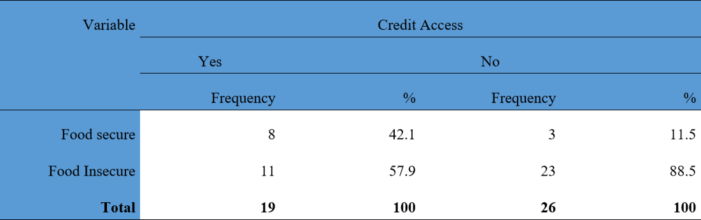

Impact of Credit Access on Food Security Among Women Rice Farmers in Ekiti State
Project Overview
This project aimed to evaluate how access to credit influences the food security status of women rice farmers in Ekiti State, Nigeria. By analyzing data from 46 farmers, the study found that access to credit significantly improved food security by enabling farmers to invest in inputs like seeds, fertilizers, and labor.
Tools & Technologies
SPSS was used for running probit regression to assess the impact of credit access on food security, while Excel was employed for organizing data and running descriptive statistics. The Food Security Index was calculated using expenditure-based methods.
Methodology
I applied probit regression to identify the factors influencing food security, with credit access being a significant variable. The Food Security Index was computed based on the household food expenditure method, with a cutoff value to determine food-secure and food-insecure households. Budgetary analysis provided insights into the profitability of rice farming among credit-accessing farmers.
Results & Interpretation
The probit regression analysis showed that credit access significantly increased the likelihood of food security among the women rice farmers, with a positive coefficient of 0.523 (p < 0.05). The food security index revealed that 42.1% of women with credit access were food secure compared to only 11.5% of those without credit access. These results highlight the crucial role of financial inclusion in enhancing food security.
Table showing distribution of Respondents Base of Food Security Level.
Probit Analysis to know factors influencing Food Security status of women rice farmers in Ekiti state.
sodiqadekunle54321@gmail.com